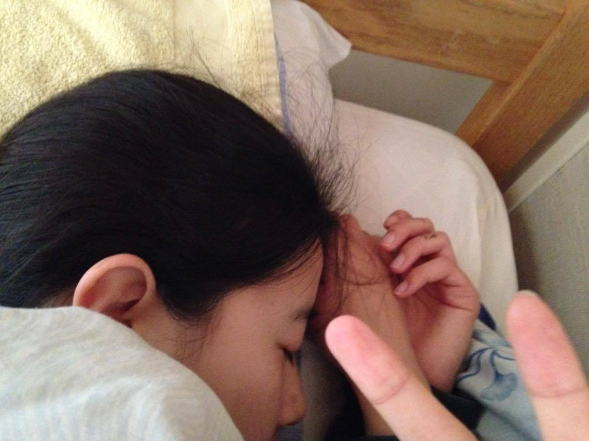

September 21
SEPTEMBER 21
Kt is surprised by
sudden papparazzi.
Kt is surprised by
sudden papparazzi.
October 6
OCTOBER 6
Kt is mildly confused on
how to use fork.
Has some issues.
Kt is mildly confused on
how to use fork.
Has some issues.
October 12
OCTOBER 12
"Why doesn't anybody love me?"
*has mild existential crisis
and gives up on life*
"Why doesn't anybody love me?"
*has mild existential crisis
and gives up on life*
October 24

OCTOBER 24
Has since recovered from
existential crisis.
Currently in process of
trying to acquire friendship.
Has since recovered from
existential crisis.
Currently in process of
trying to acquire friendship.
November 23

NOVEMBER 23
Takes nap to take a break
from the cruel reality.
Has given up on finding love.
Is chill even when asleep though.
Takes nap to take a break
from the cruel reality.
Has given up on finding love.
Is chill even when asleep though.
February 10
FEBRUARY 10
Kt poses for the camera.
Her graceful figure is
accentuated in the photo.
Kt poses for the camera.
Her graceful figure is
accentuated in the photo.
April 6
APRIL 6
"When will senpai notice me?"
"When will senpai notice me?"
April 7
APRIL 7
Kt: *internally* Why...
why do I fail...
What have I done to
deserve this...
Kt: *internally* Why...
why do I fail...
What have I done to
deserve this...
April 22
APRIL 22
Enters defensive position
once seeing camera.
Enters defensive position
once seeing camera.
April 23
APRIL 23
Happy 19th birthday KT!
Happy 19th birthday KT!